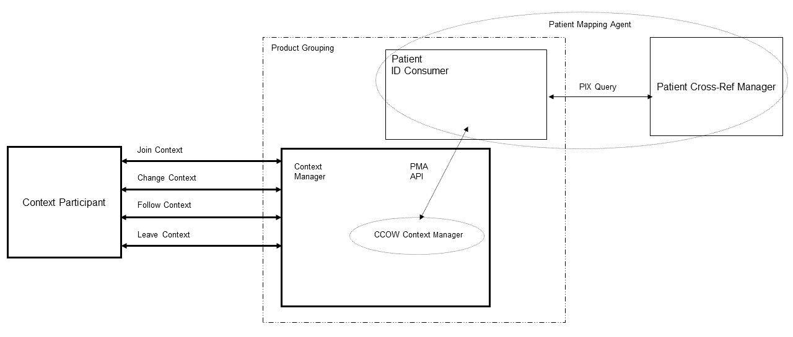

Appendix D: Cross-Profile Interactions of PIX and PSA
When the Context Manager in a Patient Synchronized Application Integration Profile is grouped with a Patient Identifier Cross-reference Consumer in a Patient Identifier Cross-referencing Integration Profile, patient identifiers must be accessible to both actors in a consistent manner. This Appendix provides the necessary mapping rules.
The Patient Identifier Cross-Referencing (PIX) Integration Profile defines a general-purpose mapping of a Patient ID within a Patient Identification Domain to aliases in other Patient Identification Domains. This mapping is intended to be used across all IHE systems that require patient identification in transactions crossing Patient Identification Domains. The PIX Integration Profile relies on HL7 V2 transactions.
The Patient Synchronized Application Integration Profile relies on HL7 CCOW which, confronted with a similar need, has defined a Patient Mapping API within its architecture. The HTTP Technology mapping for the CCOW Patient Mapping Agent API supports its operation over a network interface, thus creating an alternative to HL7 V2 messages.
As IHE strives to avoid the inclusion in its integration profiles of incompatible but functionally equivalent variants, it has decided to use HL7 V2 ADT messages for the Patient Identifier Cross-referencing Integration Profiles. In consequence, the combined use of the Patient Synchronized (CCOW based) Integration Profile and of the Patient Identifier Cross-referencing Integration profiles requires that the IHE Context Manager use the services of the PIX Integration Profile. To do so, the Patient Identifier Cross-reference Consumer in communication with the Patient Identifier Cross-reference Manager operates as a substitute for the CCOW Patient Mapping Agent. This is shown in Figure D-1 below as a dashed oval surrounding the Patient Cross-reference Manager and the Patient Identifier Cross-reference Consumer Actors. As a result it is likely that a context management solution would bundle a PMA proxy application that would implement the PIX Query in support of the Patient Identifier Cross-reference Consumer.
Figure D-1: Actor Grouping Diagram
This Appendix provides the definition of the mapping of the CCOW Patient Mapping Agent API methods onto the PIX Query Transaction (HL7 V2 QBP^Q23/RSP^K23) as defined by the PIX Integration Profile.
Figure D-1 shows the definition of the Patient Mapping Methods parameters as implemented in Web technology. Most of these Arguments relate to the normal operations of the Patient Mapping Agent methods that pose no mapping challenge except for the ItemNames and ItemValues which pose some constraints. The first constraint comes from the translation of Patient Identity Domains for both query and response from and to a CCOW defined name / value pair. The second one comes from the fact that CCOW participant applications can set more than one identifier in context the ability to detect when these identifiers represent the identities of more than one patient. IHE has taken steps to mitigate these issues by further restricting how the IHE Context Participant implements the methods. Each of these constraints is addressed in sections below.
Table D-1: ContextChangesPending
| HTTP Request Message | ||
| Argument Name | Data Type | Comment |
| Interface | string | “ContextAgent” |
| Method | string | “ContextChangesPending” |
| agentCoupon | long | “-1” |
| contextManager | string | URL for the Context Manager that is requesting the patient id cross-reference |
| itemNames | string[] | One or more item names (e.g., Patient.Id.IdList) |
| itemValues | string[] | The patient identifiers corresponding to the domains identified in item names |
| contextCoupon | long | Context Coupon value for pending context change transaction |
| managerSignature | string | Not required |
| HTTP Reply Message | ||
| agentCoupon | long | “-1” |
| itemNames | string[] | See below for valid item names for patient subject |
| itemValues | string[] | See below for any constraints on item values |
| contextCoupon | long | Return the value provided in request |
| agentSignature | string | Not required |
| Decision | string | “valid” or “invalid” |
| Reason | string | Reason text if mapping is invalid |
Adapted from the HL7 Context Management “CCOW” Standard, version 1.4
D.1 Namespace Translation from PIX Query to CCOW
The CCOW standard defines multiple identifier items that may be set into the context by an instigating participant application. The current list of valid identifier names are listed in Table D-2.
Table D-2: Patient Subject Identifiers
| Patient Subject Identifier Item Name | HL7 Meaning | HL7 Data Type | HL7 Semantic Constraints on Values | Case Sensitive |
|
Patient.Id.MRN .Suffix |
Patient medical record number, per PID-2 | ST |
HL7 Table 0203
|
No |
| Patient.Id.MPI | Patient identifier in the “Master Patient Index”, per PID-2 | ST |
HL7 Table 0203
|
No |
| Patient.Id.NationalIdNumber | Patient national identifier number, per PID-2 | ST |
HL7 Table 0203
|
No |
| Patient.Id.IdList | A list of patient identifiers for a patient, per PID-3 | CX | May be a repeating set of CX item values (per Section 1.7 of the HL7 Context Management “CCOW” Standard: Subject Data Definitions document), each of which contains an identifier that denotes the same patient | No |
Adapted from the HL7 Context Management “CCOW” Standard, version 1.4
IHE has specified in the Context Change Transaction as documented in ITI TF-2a that the Context Participant shall use the Patient.Id.IdList item. The intent is to eliminate translation as the Patient.Id.IdList value maps directly to PIX Query Transaction QPD-3.
Applications using in their identifier items Patient.Id.MRN.Suffix will need to migrate to the Patient.Id.IdList item as expected by the HL7 CCOW standard.
D.2 Processing Multiple Identifiers
CCOW participant applications are permitted to populate as many patient identifiers as they have available to them. This means that when a user selects a patient in one of these applications the context is populated with multiple identifiers for the selected patient. When the CCOW Patient Mapping Agent (PMA) accepts multiple patient identifiers as input, the PMA has the responsibility of invalidating patient mapping and causing the context change transaction to be cancelled if it determines that the multiple identifiers supplied as part of the transaction identify more than one patient.
The QPD segment as defined in the IHE PIX Query Transaction specifies a single identifier uniquely identifying one patient within a given Patient Identification Domain. In the case where multiple identifiers are populated, the context manager may have to process the response to the initial PIX Query Transaction to evaluate if the other identifiers in context are included. If so, no further processing is required. Otherwise, an additional PIX Query will need to be issued and the results processed. Should a non-null result be returned, indicating the identifier uniquely identifies a different patient for the given domain, the context manager shall assume “invalid” in the decision field and “multiple patients identified” in the reason field.
In order to mitigate this condition, IHE specifies that all context participants supporting the Patient Synchronized Applications Profile shall only set one identifier for the patient when a Patient Identifier Cross-referencing Profile is used by the context manager. This means that the context participant for those applications that manage multiple patient identifiers will need to be configurable as to which identifier item is passed in the Change Context Transaction.